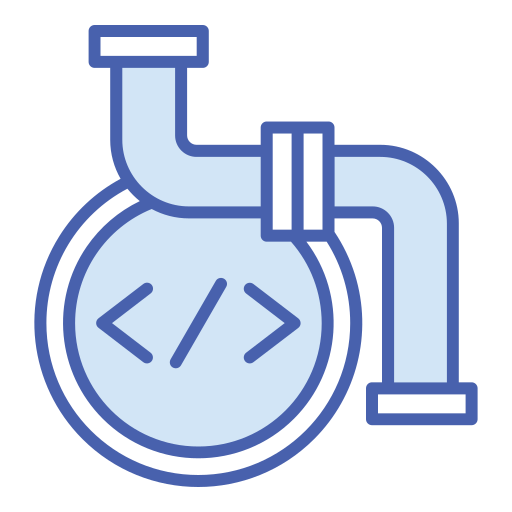
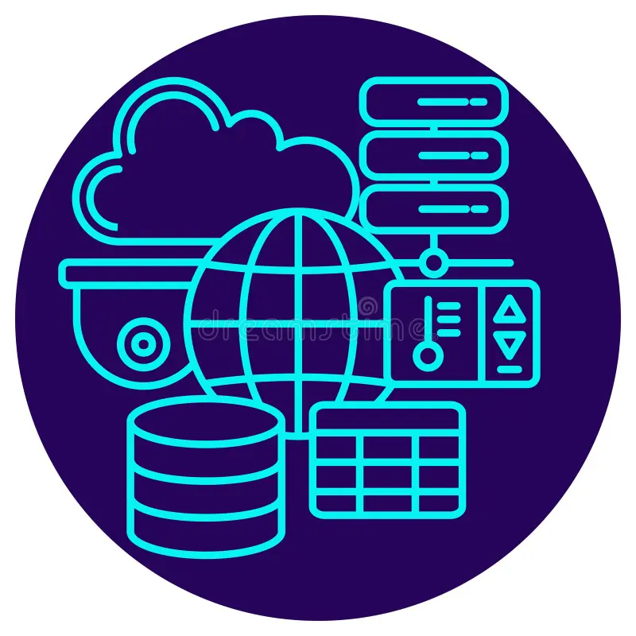
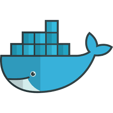
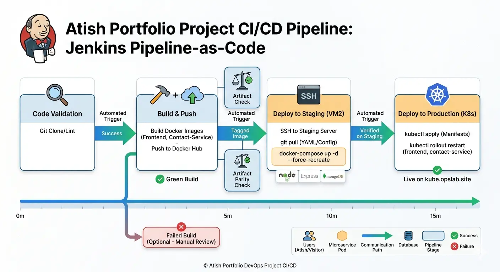
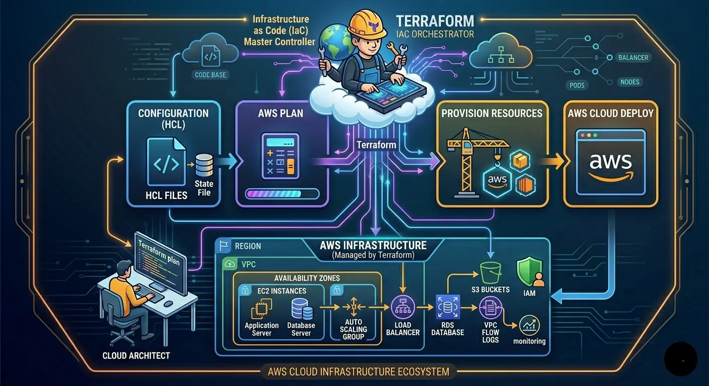
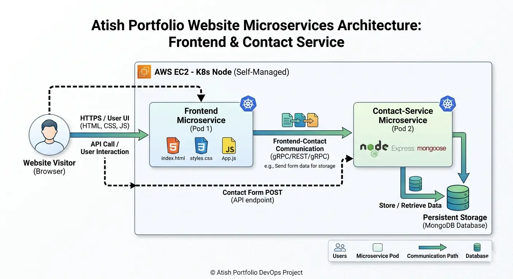

DevOps Engineer | Linux Administrator | Automating & Streamlining CI/CD Pipelines | Cloud & Infrastructure Expert
View Portfolio
Design and maintain automated build and deployment pipelines using Jenkins, Git, and Terraform.

Manage scalable AWS environments, using Infrastructure as Code for reliable and secure deployments.

Containerize applications with Docker and orchestrate with Kubernetes for efficiency and scalability.
Performance tuning, monitoring, and automation to improve deployment speed and system reliability.

Built an end-to-end CI/CD pipeline using Jenkins to automate build, test, and deployment of containerized applications on Kubernetes (EKS), enabling faster and reliable releases.

Designed and provisioned scalable AWS infrastructure using Terraform, including VPC, EC2, and RDS, with modular and reusable Infrastructure as Code practices.

Beautifully designed portfolio website using microservices deployment with Docker and Kubernetes.
DevOps Engineer experienced in Git, Docker, Jenkins, Terraform, Linux, and AWS. Focused on building scalable CI/CD pipelines, automating deployments, and managing cloud infrastructure with high availability and security.
Download Resume